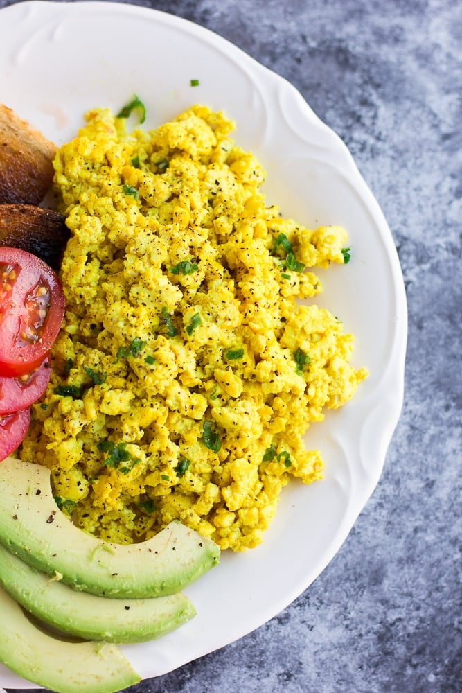

Scramble Tofes

How to make Scramble Tofes:
This is a damn good meal! Add some fried potatoes and make a burrito!
Ingredients:
- tofu
- oil
- dijon mustard
- turmeric
- kala namak
- Heat some oil.
- Tear off chunks of the tofu and press the water out with your hands.
- Put the tofu in the pan and scramble up and fry at high heat for a while.
- Add some dijon mustard and some turmeric for color.
- Add some kala namak (himalayan black salt) for sulfurous eggy flavor.
- Et voila!